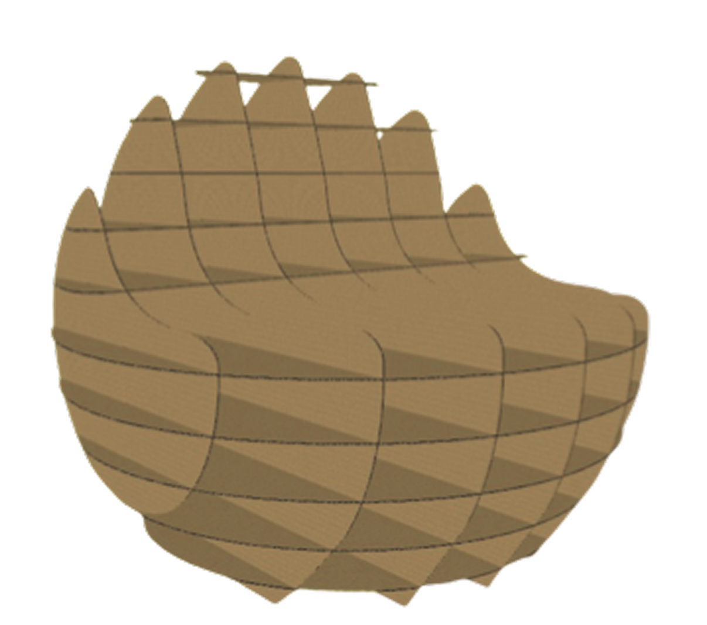
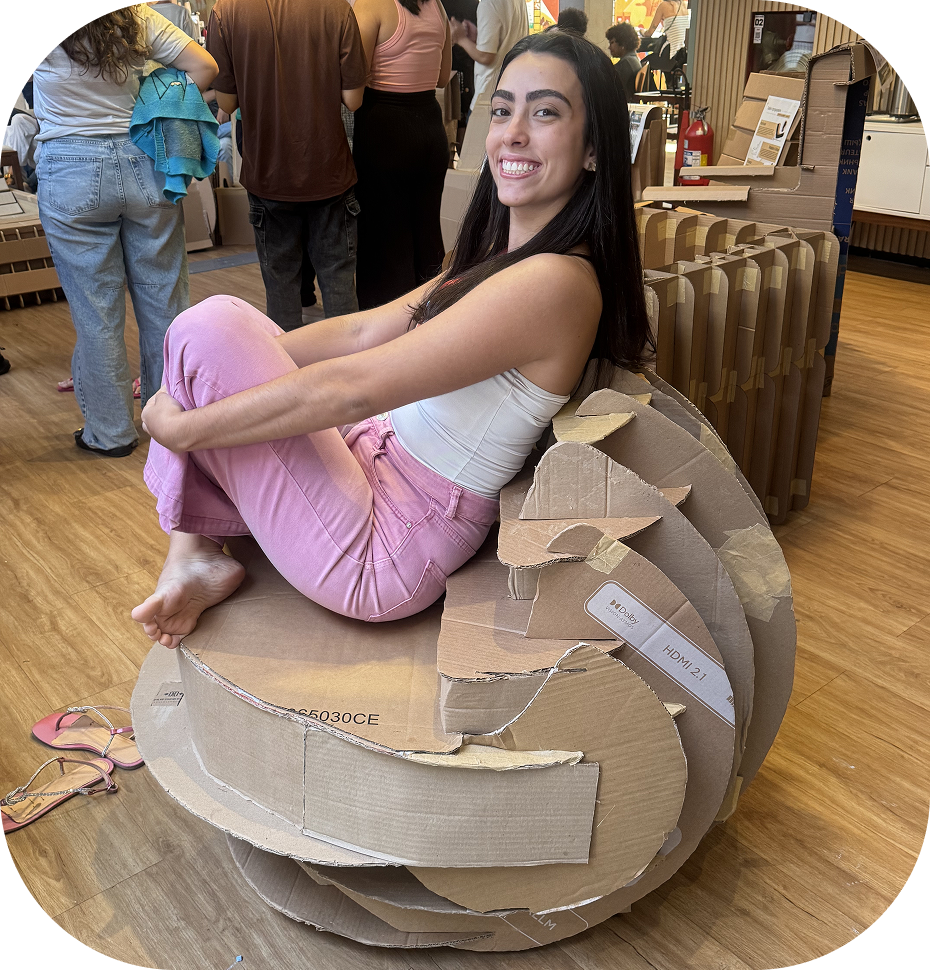
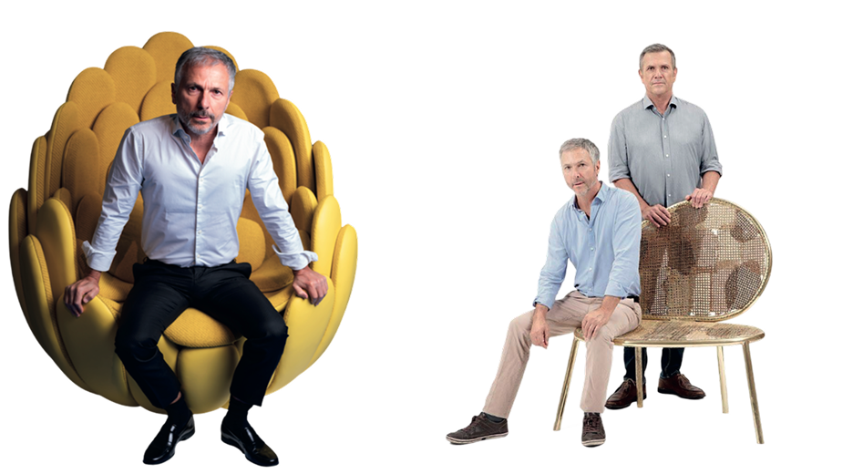
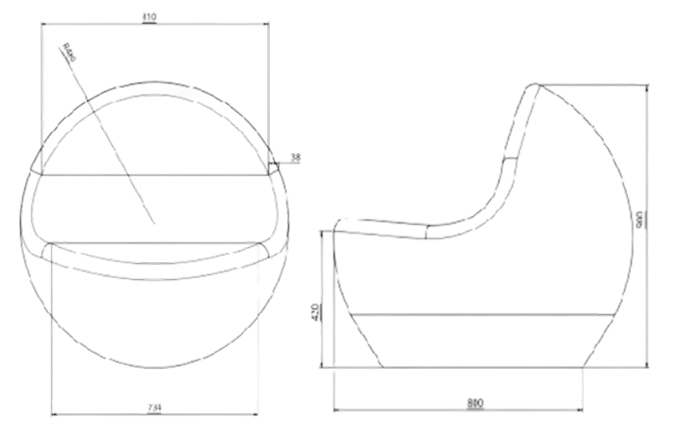
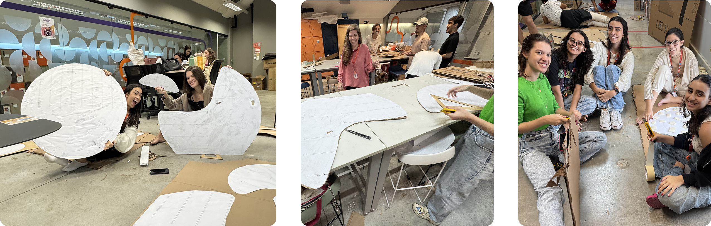
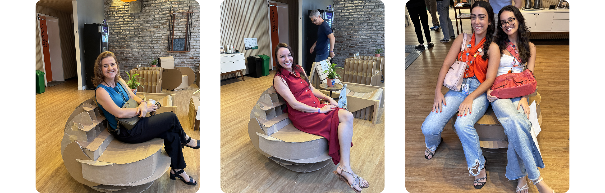

Cadeira Ninho
100% Papelão
Design de mobiliário em papelão inspirado nas formas orgânicas da natureza e no conceito de acolhimento.


Como criar uma cadeira confortável, resistente e acolhedora utilizando papelão como matéria-prima única?
O projeto surgiu a partir da proposta de desenvolver um mobiliário funcional utilizando materiais acessíveis e sustentáveis. Além de atender requisitos estruturais e ergonômicos, o produto deveria transmitir sensações de conforto e acolhimento por meio de sua linguagem formal.
Buscando referências na natureza e no design brasileiro
A principal inspiração foi a Cadeira Bultex, desenvolvida pelos Irmãos Campana, conhecida por suas formas orgânicas e pela sensação de abrigo proporcionada ao usuário.

Formas curvas transmitem acolhimento.
O conforto depende tanto da estrutura quanto das proporções.
O papelão possui excelente potencial estrutural quando utilizado corretamente.
Um ninho para descansar
A proposta foi traduzir a sensação de proteção encontrada nos ninhos naturais para uma peça de mobiliário. A estrutura envolvente cria uma experiência de abrigo, enquanto as curvas suaves reforçam a ideia de acolhimento e relaxamento.
Explorando possibilidades
O desenvolvimento começou com esboços manuais para investigar diferentes volumetrias e linguagens formais. Várias alternativas foram avaliadas até chegar a uma configuração que equilibrasse estética, estabilidade e conforto.
Modelagem Digital
Transformando ideias em estrutura. Após a definição da forma principal, a cadeira foi modelada em 3D utilizando Onshape. Esta etapa permitiu validar:
- Proporções
- Altura do assento
- Curvatura do encosto
- Distribuição estrutural

Projetando para fabricação
Com o modelo validado, a estrutura foi adaptada para fabricação utilizando o Slicer for Fusion. O software permitiu dividir a cadeira em peças estruturadas, facilitando a produção e a montagem.
Desafios encontrados:
- Garantir estabilidade estrutural
- Evitar deformações
- Otimizar o consumo de material
Do digital para o físico
As peças foram cortadas em papelão e montadas manualmente. Durante a construção, diversos ajustes foram realizados para melhorar: resistência, estabilidade, acabamento e conforto.

Aprendendo com o uso real
O protótipo passou por testes de uso com pessoas reais para avaliar conforto, estabilidade e ergonomia.

Vamos criar algo incrível juntos?
Estou sempre aberta a novos desafios e colaborações. Me conta!